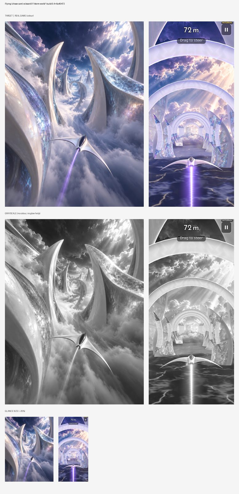
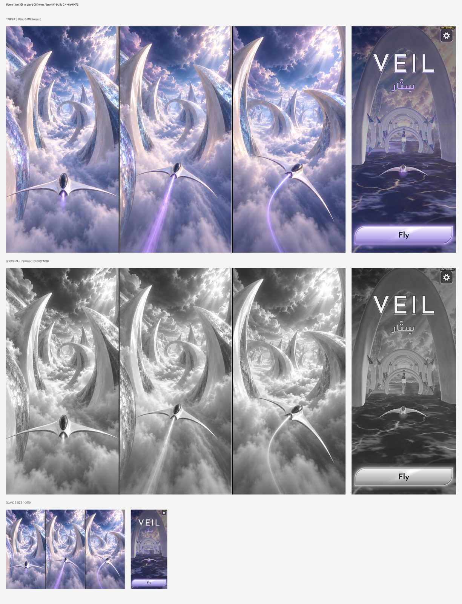

build.json · automated checks for build 0.4+6a40472
Automated: each capture from this build beside its visual-bible target (sheets below), with measured differences. The numbers flag drift; they don't judge quality. Look at the sheets.
| # | Screen | Lightness (build / target) | Contrast | Colourfulness | Dark share | Highlights | Drift flags | Sheet |
|---|---|---|---|---|---|---|---|---|
| 1 | Flying (chase cam) vs board 01 'storm world' | 59.8 / 54.2 | 24.0 / 20.0 | 23.3 / 15.1 | 0.04 / 0.04 | 0.26 / 0.13 | – | art_01.jpg |
| 2 | Home (live 3D) vs board 06 'home / launch' | 42.1 / 62.0 | 18.2 / 17.6 | 18.9 / 19.2 | 0.09 / 0.0 | 0.04 / 0.18 | darker, missing highlights/glow | art_02.jpg |
| Screen | Build | Target |
|---|---|---|
| Flying (chase cam) vs board 01 'storm world' | #383969 #b5accf #9089b6 #d9cee7 #64679a #ede3ef | #8c8ca7 #616683 #3e4461 #72718c #b8b3c7 #e3dae0 |
| Home (live 3D) vs board 06 'home / launch' | #2f3152 #4e4d6b #64617f #8d859f #776f8a #bfb7d4 | #8381a5 #565c85 #9798bd #c9c0d8 #b1a6c5 #eadfe8 |
Pending: the game hasn't declared its colour roles (art.palette in config/build_checks.json).

